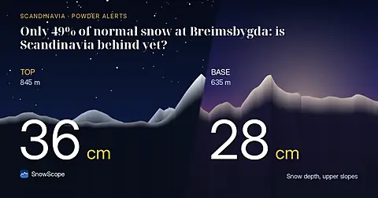
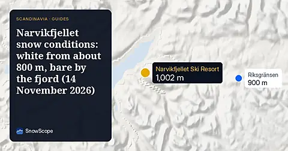
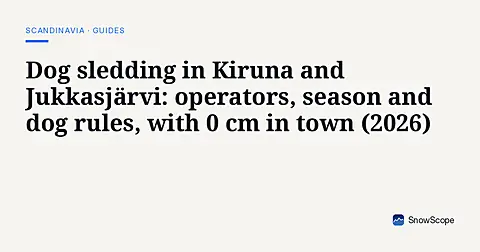
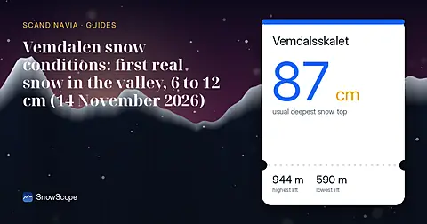
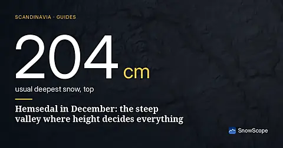
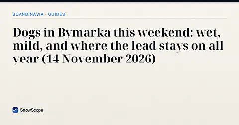
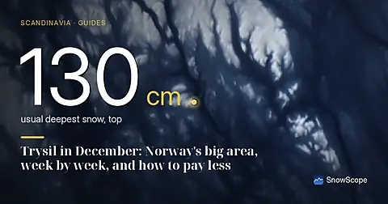
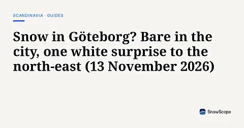
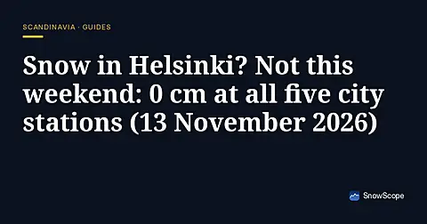
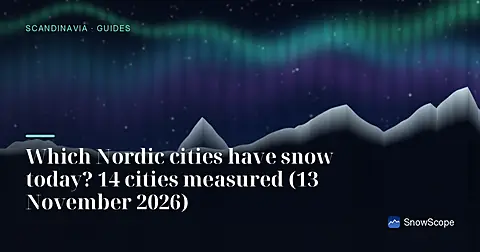

Snow reports · Scandinavia
Daily snow reports for skiers: where the snow is, what is coming and where to ski, from the SnowScope snow map and measuring stations. Every number comes from that day's data.
Snow by country today
The whitest countries today: Sweden (96 %), Finland (94 %) and Norway (92 %).
Most new snow in the week ahead: Norway (22 cm), Sweden (13 cm) and Finland (5 cm).
Snow today at the main resorts
- Abisko · 137 cm
- Sulitjelma Fjellandsby · 127 cm
- Tromsø Alpinpark · 69 cm
- Hemsedal skisenter · 40 cm
- Bydalsfjällen · 36 cm
- Myrkdalen · 34 cm
- Gräftåvallen · 33 cm
- Jølster Skisenter · 33 cm
- Hornindal · 30 cm
- Orsa Grönklitt · 29 cm
- Sunndal alpinsenter · 29 cm
- Åre · 29 cm
- Järvsöbacken · 28 cm
- Surnadal · 28 cm
- Volda skisenter · 28 cm
- Kiririnteet · 24 cm
- Lindvallen · 24 cm
- Rukatunturi · 24 cm
- Ramundberget · 23 cm
- Saariselka · 23 cm
- Sälen · 23 cm
- Ski Saariselkä · 22 cm
- Tusten Skiheiser · 22 cm
- Klövsjö / Storhogna · 21 cm


Hafjell above Lillehammer month by month: usual snow depth at the base, mid-mountain and the top from 46 past winters, the first snow, the deepest weeks and how the recent winters compare.

Kvitfjell's 46-winter snow record: when to expect deep snow for the speed races and spring skiing on Norway's Olympic downhill course.

Why Trysil's snow report shows two very different numbers: usual depth at the base, mid-mountain and the top of Trysilfjellet from 46 past winters, month by month, and what it means for the runs you will ski.

Despite 60 cm of fresh snow in 72 hours, Scandinavia's mid-November depths are well below average as of 16 November.

Riksgränsen dominates Scandinavia with 173 cm of snow depth measured on 16 November, holding far more mountain water than any rival resort in the region.

Himos opens a prepared cross-country loop on 14 November as natural snow remains absent from the forest floor around this Finnish resort.

Lofsdalen has 6–8 cm across the valley as of 13 November 2026, with 7 cm forecast over the next week and no rain threat.

On 14 November, Narvikfjellet has about 50 cm at the top and nothing at sea level. Snow depths vary with height by 1,000 metres.

Røros sits at 630 m on a mountain plateau. On 13 November, 11 cm lay measured at the weather station—thin but real winter snow for the sled-dog season.

Romme Alpin received patchy early snow on 13 November 2026. Borlänge station 12 km away measured 4 cm; Ludvika had 10 cm. Rain dominates the forecast.

Beitostølen has 12 cm measured at the weather station on 13 November. The whole ski area sits at the same altitude band, so snow depth barely changes from base to summit.

Vuokatti snow conditions in mid-November 2026: the stations at Sotkamo measured 0 cm on 13 November, Kajaani 1 cm; about 9 cm is forecast this week but some of it as rain; slopes aim to open 4 December. 46 past winters.

On 13 November, Kindsjön station at 425 m near Branäs measured 27 cm of snow while the valley floor stayed bare. Height is everything this week in Värmland.

Idre Fjäll's December snow odds improve sharply after mid-month. On 13 November, the typical mid-mountain depth on 15 December is 32 cm.

Norefjell received 14 cm of fresh snow in the past week, with 45 cm now on the upper slopes. Data from 13 November 2026.

Tahko opens on made snow as natural cover melts. Expect 7–8 cm in the next week; rain and wet snow likely. Only 2 lifts running now.

Tänndalen has 7 cm at its base station on 13 November, with 8 cm forecast in the next week. Ramundberget opens 19 December.

Sälen December skiing: 28 cm on a typical 15 December and 48 % of winters with 30 cm in mid-December, down from the 1980s; Trysil next door does better.

Rovaniemi's first snow arrived on 13 November: 7–8 cm at ground level. Here's what husky farms charge, when they open, and how to walk your dog safely in the Arctic.

Myrkdalen sits behind normal for mid-November, but 44 cm of new snow is forecast at the top in the next week. Data from 13 November.

Kiruna town has 0 cm of snow on 13 November. Dog-sledding operators work around thin early-season snow. What to know about tours and local rules.

Saariselkä has 4 cm measured at its station on 13 November. About 22 cm is forecast for the next week. The usual depth here on 14 November is 17 cm.

Riksgränsen holds 9 cm at base level on 13 November. Both resorts stay closed until February; the Arctic darkness, not snow depth, sets their season.

Ruka's 6-day pass costs EUR 265. Snow odds jump from 39% in early December to 85% by Christmas week. Plan mid-month or later.

Hafjell has about 2 cm at the top on 14 November. The forecast adds 9 cm next week, but the base stays bare.

On 13 November 2026 the weather stations in Stockholm and Helsinki measured 0 cm of snow while Sälen had 45 cm and Umeå 20 cm. Height, the sea, the city and the track of the storms explain it, with numbers from 46 past winters.

Hemavan's mid-mountain has 82 cm of snow on a typical 15 December. Every winter in 46 years had 30 cm or more in mid-December. Data from 13 November 2026.

Snow is thin and patchy at Pyhä-Luosto on 13 November, but up to 23 cm is forecast in the next seven days across all heights.

Vemdalen snow conditions in mid-November 2026: Swedish weather stations around Vemdalsskalet and Björnrike measured 6 to 12 cm on 13 November after a snowy two days, about 8 cm more this week, opening plans and 46 past winters.

Voss will see 35 cm at the summit but rain at the base over the next week. Snow sits above 600 m, measuring 10 cm at nearby Mjølfjell on 13 November.

Tromsø's husky farms open from mid-November. On 13 November, town had 6 cm but the mountains held 44 cm. Here's how to book and what to know.

Sälen station near Kläppen measured 45 cm on 13 November after one night of heavy snow. Rain and mild air arrive this week. Data from 13 November 2026.

Oppdal's base has 60 cm snow on a typical 15 December, with 93% of winters holding 30 cm or more in mid-December. Data from 46 winters.

No snow in Bergen on 14 November: bare ground in town, 5 cm at Kvamskogen 35 km away. Heavy rain Sunday. Year-round dog rules apply.

Geilo's mid-mountain stays skiable in 96% of Decembers. Typical depth on 15 Dec: 42 cm base, 57 cm mid, 68 cm top. Day pass from NOK 590.

Göteborg has 0 cm of snow on 14 November. The weekend is mild. November's leash rules are relaxed: explore parks and forests with your dog.

Helsinki has no snow on 14 November, but plenty of dog parks and forests. Snow usually arrives around 20 November.

On 15 December, Hemsedal shows 32 cm at base, 70 cm at mid-mountain and 106 cm at top. Height is everything here.

Levi's December snow has strengthened over time. Last 15 winters: 100% of Christmas weeks had 30 cm or more. Typical depth 15 December: 38 cm. Data 13 November 2026.

Mid-mountain snow reaches 30 cm in 83–100 % of Decembers across Scandinavia. Fixed prices in Finland; dynamic pricing in Norway and Sweden. Data from 46 winters, 13 November 2026.

No snow yet in Tampere on 14 November: bare ground at all stations, wet flakes forecast Saturday. Dog parks open year-round; ski tracks ban dogs except on special dog-only evenings.

Trondheim's weekend brings rain and mild air, not snow. Inland snow sits 5–18 cm deep, but Bymarka trails are wet. Know the year-round leash rules before you walk.

Trysil December skiing: 44 cm mid-mountain on a typical 15 December, 83 % of winters with 30 cm in mid-December; prices are dynamic, so book early.

Ylläs snow conditions in mid-November 2026: the weather stations around Ylläs measured 0 to 2 cm on 13 November, far below normal; about 23 cm of snow is forecast this week with no rain, and the slopes aim to open on 21 November.

Kvitfjell has about 5 cm at the top on 14 November 2026, well behind the usual 27 cm. Upper slopes will gain snow this week; the base stays wet.

Book 15-21 December at Åre for the best snow odds before Christmas crowds. 89% of winters had 30 cm at mid-mountain that week. Data from 13 November 2026.

Bergen city is snow-free on 13 November, but Kvamskogen 35 km inland has 5 cm. Heavy rain arrives Sunday with little chance of snow.

Göteborg city is snow-free on 13 November. Gunntorp, 39 km north-east, measured 12 cm, but coastal stations show 0 cm across the region.

Luleå's airport sent no snow depth today, but six surrounding stations all measured 3 to 7 cm of fresh snow on 13 November 2026—a normal start for mid-November.

Dog owners in Oslo, 13 November 2026: 4 cm of snow at Blindern, 31 cm at Bjørnholt and 37 cm at Tryvannshøgda. Where dogs may run free, what the leash rules say in November, and a cold, dry Saturday.

Oulu's first snow cover of winter arrived on 13 November: 7 cm at the city station, above the usual 2 cm for this date. Forecast: 2–3 cm more by Saturday.

Rovaniemi has 7–8 cm of snow on 13 November, with 5 cm more forecast for the weekend. Thin but steady for the Arctic Circle.

Stockholm has 0 cm of snow on 13 November. The nearest snow is 75 km away. Here are dog-friendly options in the city and when snow may arrive.

Tampere has no snow on 13 November, but 2 cm fell 48 km away. The city is a few days late; usually half of winters have snow by now.

Tromsø town has 6 cm but the Lyngen Alps hold 44 cm. SnowScope measured snow across the region on 13 November.

Trondheim's coast is bare, but 18 cm lies inland at higher ground. SnowScope measured the snow on 13 November 2026.

Finland's snow on 13 November lies north of Oulu: 7 to 8 cm in the Rovaniemi region, but bare ground in the south where Helsinki measured 0 cm across all stations.

Jämtland's first solid snow cover arrived this week: 19 to 33 cm measured at stations around Storsjön on 13 November. No thaw expected.

Norway's deepest snow on 13 November is 37 cm in the hills north of Oslo and 44 cm in Lyngen, Troms. The coasts are bare.

Helsinki measured 0 cm across all stations on 13 November. Snow usually arrives by late November, but this weekend brings only drizzle and rain.

Umeå recorded 20 cm at Röbäcksdalen on 13 November after bare ground four days earlier. This is far ahead of the typical November depth.

On 13 November, Kiruna measured 0 cm of snow for the first time in 46 winters. The forecast brings 1–2 cm this weekend, still far short of the typical 23 cm.

On 13 November, 133 of Sweden's 322 weather stations had snow. The deepest lay in a belt from Dalarna to Västerbotten, with Sälen at 45 cm, while the far north remained almost bare.

Stockholm measured 0 cm of snow on 13 November 2026. The capital remains snow-free while the north gets its first significant cover.

Measured snow depth in Oslo on 13 November 2026: 4 cm at Blindern, 31 cm at Bjørnholt and 37 cm at Tryvannshøgda. What a normal mid-November looks like, and what the weekend does to it.

Oslo and Umeå lead 14 Nordic cities with snow on 13 November: 37 cm above Oslo, 20 cm in Umeå. Kiruna and southern capitals are bare.